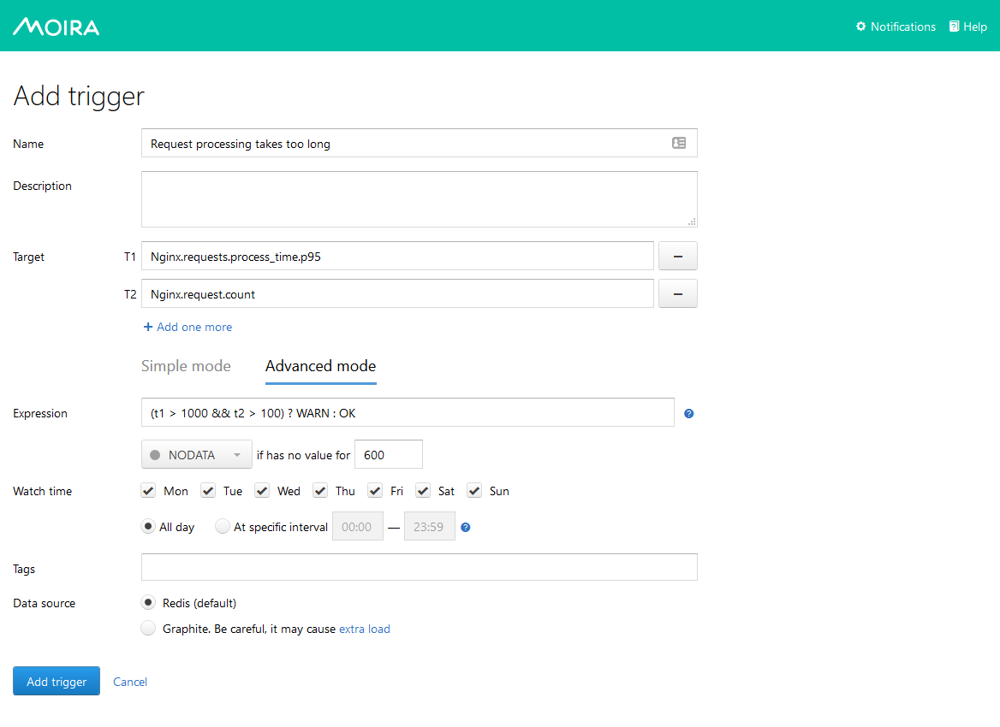

Advanced Mode Trigger¶
Sometimes a simple trigger (Simple Threshold Trigger) doesn’t provide enough flexibility for your task.
For example, you may want to receive a notification when 5% of user requests take up more than a second to process, but only if there are more than 100 requests per minute. Usually, you will have two separate metrics for this:
Nginx.requests.process_time.p95- 95th percentile of request processing time in millisecondsNginx.requests.count- request count per minute
Maybe you can construct a monstrous Graphite expression to reflect this combination, but Moira’s Advanced Mode is better:
{kind=link}
You can use any govaluate expression with predefined constants here:
t1,t2, … are values from your targetsOK,WARN,ERROR,NODATAare states that must be the result of evaluationPREV_STATEis equal to previously set state, and allows you to prevent frequent state changes
Note
Only T1 target can resolve into multiple metrics in Advanced Mode. T2, T3, … must resolve to single metrics. Moira will calculate expression separately for every metric in T1.
Any incorrect expressions or bad syntax will result in EXCEPTION trigger state.
Templates¶
The template is supported by Moira, the template implements data-driven templates for generating textual output. Information about how to program the templates themselves, see the documentation.
Data you can use:
Example:
https://grafana.yourhost.com/some-dashboard{{ range $i, $v := .Events }}{{ if ne $i 0 }}&{{ else }}?{{ end }}var-host={{ $v.Metric }}{{ end }}
Data source¶
If Remote Triggers Checker is enabled, you can choose between following Data Sources:
Redis — Moira database. By default Redis stores data for only several hours. It covers most of user cases when you need real-time alerting.
Graphite — remote Graphite-like HTTP API. It should be used only when you need to get metrics for a large period.
Warning
Please, use this Data Source with caution. It may cause extra load on Graphite HTTP API.
Important
Please, keep in mind that functions in Remote and Local triggers can work differently. To avoid this, make sure you use Carbonapi with the same revision as in Moira. Latest Carbonapi listed in ../changelog.